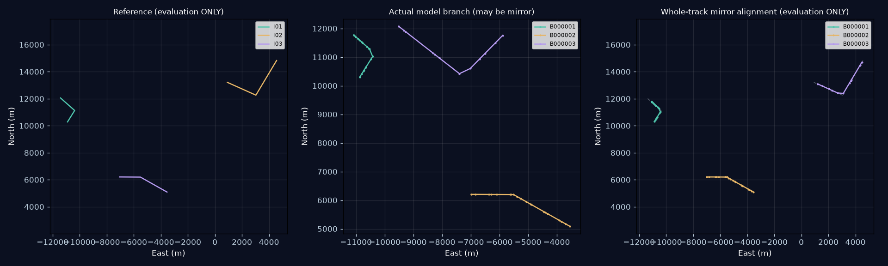
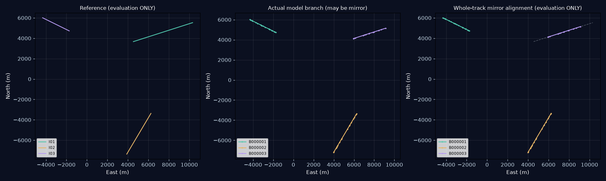
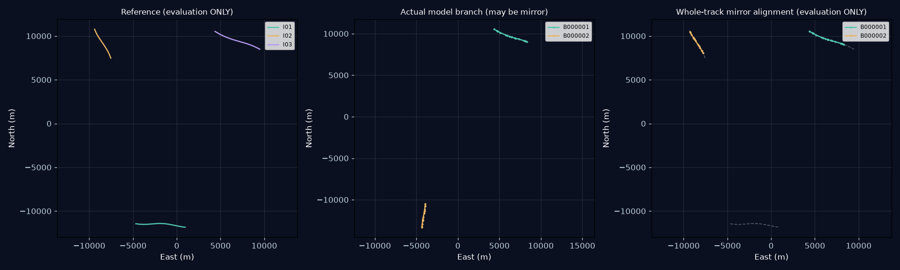
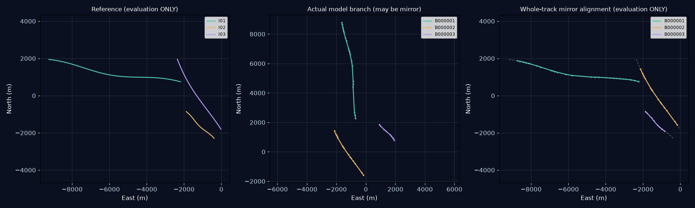
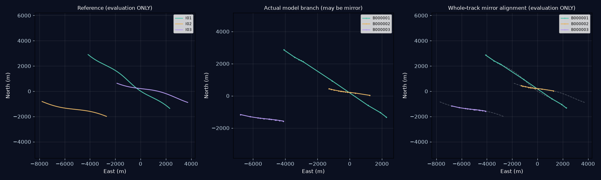
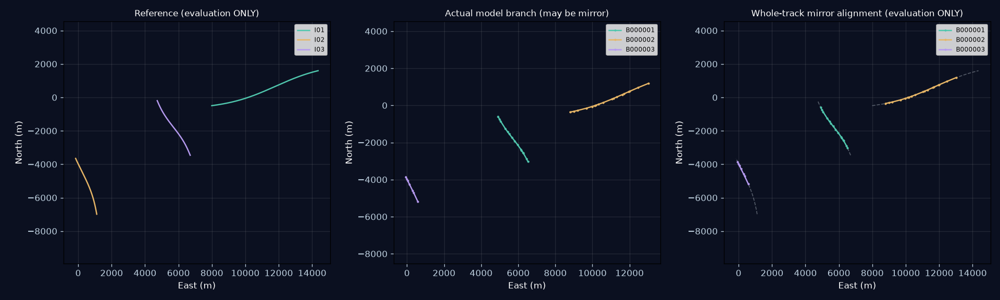
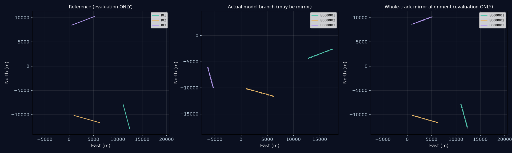
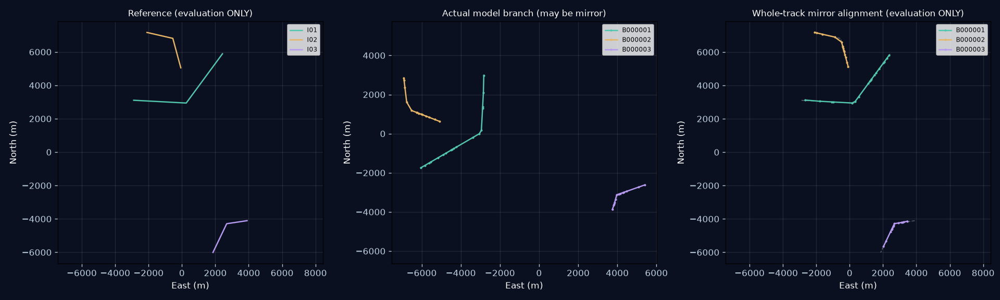
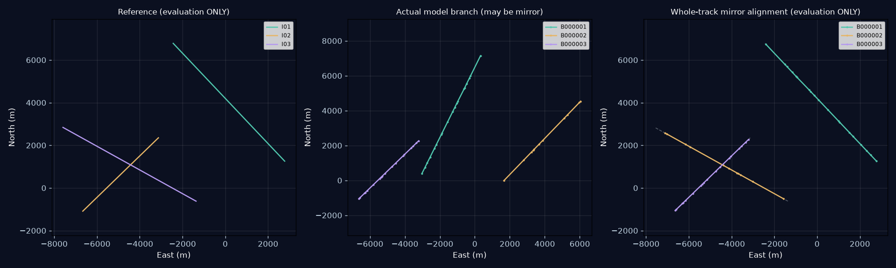
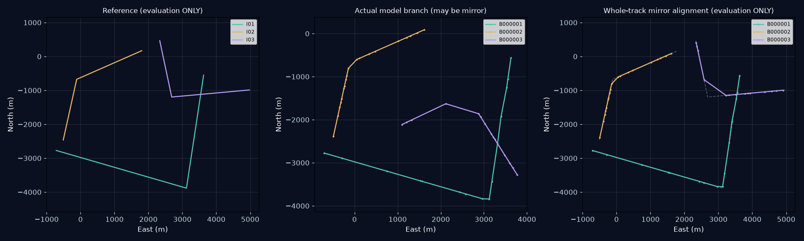

小怪 · 10份样本真实模型测试
30个ZIP分10份，完整检查9246条观测、4623组双阵；每份均匀抽50组，共500组真实推理，累计510次调用。
执行完成不等于识别质量全部合格。当前选出442/500个工作位置，58组未归属；曲线样本存在候选覆盖瓶颈。整体镜像方向仍有歧义。第三栏借助参考只做评估，不能冒充模型自动选对绝对侧向。
| 样本 | 有交点/50 | 模型选位置/50 | 目标假设数 | 未归属 | 镜像对齐RMSE米（仅评估） | 候选最高覆盖 | 真实调用 |
|---|
| 1 | 50 | 50 | 3 | 0 | 10.86 | 50 | 51 |
| 2 | 50 | 50 | 3 | 0 | 12.66 | 50 | 51 |
| 3 | 50 | 34 | 2 | 16 | 16.71 | 34 | 51 |
| 4 | 50 | 44 | 3 | 6 | 4.63 | 44 | 51 |
| 5 | 50 | 33 | 3 | 17 | 1.1 | 33 | 51 |
| 6 | 50 | 40 | 3 | 10 | 6.51 | 40 | 51 |
| 7 | 50 | 50 | 3 | 0 | 64.78 | 50 | 51 |
| 8 | 45 | 45 | 3 | 5 | 10.03 | 45 | 51 |
| 9 | 48 | 48 | 3 | 2 | 2.99 | 48 | 51 |
| 10 | 48 | 48 | 3 | 2 | 5.2 | 48 | 51 |
样本01 · 本次抽样完整
btr_target_001 (1).zip / btr_target_002 (1).zip / btr_target_003 (1).zip
工作位置 50/50；未归属 0；镜像对齐误差 10.86米（非绝对定位精度）。

样本02 · 本次抽样完整
btr_target_001 (1) (1).zip / btr_target_002 (2) (1).zip / btr_target_003 (3).zip
工作位置 50/50；未归属 0；镜像对齐误差 12.66米（非绝对定位精度）。

样本03 · 覆盖不足
btr_target_001 (4).zip / btr_target_002 (5).zip / btr_target_003 (6) (1).zip
工作位置 34/50；未归属 16；镜像对齐误差 16.71米（非绝对定位精度）。

样本04 · 覆盖不足
btr_target_001 (7).zip / btr_target_002 (8).zip / btr_target_003 (9).zip
工作位置 44/50；未归属 6；镜像对齐误差 4.63米（非绝对定位精度）。

样本05 · 覆盖不足
btr_target_001 (10).zip / btr_target_002 (11).zip / btr_target_003 (12).zip
工作位置 33/50；未归属 17；镜像对齐误差 1.1米（非绝对定位精度）。

样本06 · 覆盖不足
btr_target_001 (13).zip / btr_target_002 (14).zip / btr_target_003 (15).zip
工作位置 40/50；未归属 10；镜像对齐误差 6.51米（非绝对定位精度）。

样本07 · 本次抽样完整
btr_target_001 (16).zip / btr_target_002 (17).zip / btr_target_003 (18).zip
工作位置 50/50；未归属 0；镜像对齐误差 64.78米（非绝对定位精度）。

样本08 · 几何缺失
btr_target_001 (19).zip / btr_target_002 (20).zip / btr_target_003 (21).zip
工作位置 45/50；未归属 5；镜像对齐误差 10.03米（非绝对定位精度）。

样本09 · 几何缺失
btr_target_001 (22).zip / btr_target_002 (23).zip / btr_target_003 (24).zip
工作位置 48/50；未归属 2；镜像对齐误差 2.99米（非绝对定位精度）。

样本10 · 几何缺失
btr_target_001 (25).zip / btr_target_002 (26).zip / btr_target_003 (27).zip
工作位置 48/50；未归属 2；镜像对齐误差 5.2米（非绝对定位精度）。
